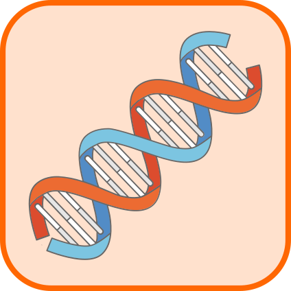

Introducción a la Genética de Poblaciones y a la Genética Cuantitativa
2024-02-27
Prefacio
El curso de Genética de Poblaciones y Genética Cuantitativa (también conocido como Genética II) es, de alguna manera, la continuación natural del curso de Genética I. Ambos cursos fueron desarrollados en conjunto, de manera tal que permitiesen al estudiante ir avanzando en la comprensión de los conceptos, desde las bases moleculares de la herencia hasta sus implicancias en la evolución de las especies. En esta separación (algo arbitraria), el curso de Genética I hace más foco en mecanismos y procesos que se dan a nivel del individuo y que sientan las bases para entender la evolución al nivel de las poblaciones, mientras que el curso de Genética II aprovecha de esta construcción para comenzar a desarrollar nuestra comprensión sobre los fenómenos que ocurren a esta última escala.
Cuando en conjunto con los docentes de otros cursos que involucran a la genética decidimos como organizar y distribuir los conocimientos en el marco del nuevo Plan de Estudios (2020), resultó que Genética II debería incorporar fuertes conocimientos en tres grandes temas: Genética de Poblaciones, Genética Cuantitativa y Genómica. Desafortunadamente, el número de créditos disponibles era bastante limitado, por lo que debíamos optar por armar un curso que sobrevolase los temas, sin dejar espacio para que los mismos sean tratados al nivel requerido o dejar fuera demasiados temas. Nuestra solución de compromiso fue de alguna manera ortogonal a estas opciones; hemos organizado el cursos en dos grandes bloques, el primero de Genética de Poblaciones y el segundo de Genética Cuantitativa, mientras que decidimos ubicar a la Genómica de manera transversal, motivándola especialmente a través de los ejemplos y ejercicios que surgen en los distintos capítulos.
Una de las grandes diferencias que encontrarás entre el curso de Genética I y el de Genética II se encuentra en las herramientas que utilizaremos para comprender los fenómenos de nuestro interés. Mientras que en Genética I gran parte del esfuerzo fue en comprender e internalizar los conceptos mecanísticos de la herencia, en Genética II nos enfocaremos en entender y modelar los conceptos que surgen de la interacción de un número importante de individuos, así como de generar predicciones a corto, mediano y largo plazo de la evolución de las poblaciones. Esto nos lleva directamente a uno de los focos metodológicos del presente curso: la capacidad de modelar sistemas biológicos, de comprender las implicancias y limitaciones de nuestros modelos, así como de interpretar sus predicciones. En particular, nos interesa desarrollar en este curso tus habilidades para comprender las relaciones que se generan entre los aspectos determinísticos de los sistemas biológicos y los aspectos estocásticos (lo que hace al azar). Para esto, en el contexto de la genética, es necesario contar con un conjunto mínimo de habilidades matemáticas, sin las cuales sería imposible siquiera adentrarse a la tarea. Sin duda, todas estas habilidades y conocimientos has tenido la oportunidad de adquirirlos en todo tu transcurso por el sistema educativo, ya que no se trata de nada extraordinario: buenos conocimientos (y sobre todo mucha práctica) de aritmética y álgebra elemental, teoría combinatoria, conceptos básicos de cálculo integral y diferencial, algunas nociones de álgebra lineal, un conocimiento básico de teoría de probabilidad y distribuciones, así como algunos conceptos básicos de estadística. A lo anterior deberás agregarle, un buen dominio de los conocimientos biológicos adquiridos en Genética I, así como de las bases de la vida y las particularidades de la biología de los distintos dominios de la vida.
Uno de los objetivos del presente curso es desarrollar tus capacidades de razonamiento, utilizando el modelado de fenómenos evolutivos como el medio con el cual vamos a trabajar. La comprensión cabal de los modelos requiere, por lo general, de la capacidad de resolver diversos ejercicios y problemas, con variados niveles de dificultad, por lo que harás uso abundante del papel y el lápiz. A decir verdad, posiblemente sea provechoso copiar e ir desarrollando por ti mismo las distintas ecuaciones que irán apareciendo en el texto. Además, otro de los objetivos comprende el desarrollo de tus capacidades científicas, experimentando, generando hipótesis, buscando como probarlas y reportando los resultados de tus experimentos. Para ello hemos desarrollado laboratorios virtuales, donde podrás experimentar a tu placer. Si además eres un estudiante al que le gustan los desafíos y oportunidades que brinda el poder desarrollar tu propio código, también contamos con la posibilidad de ayudarte a desarrollar los ejercicios en el software libre ‘R’.
Por todo lo anterior, Genética II es un curso que probablemente requerirá de un importante esfuerzo de tu parte. Si bien hemos puesto todo nuestro esfuerzo en mantener la matemática empleada en el curso en un nivel básico, entendemos que reducirla más implicaría una perdida de calidad injustificable. Por lo tanto, para poder avanzar en forma razonable te aconsejamos enfáticamente que realices la prueba diagnóstica en la forma más honesta posible. El objetivo principal de la misma es ayudarte a detectar los principales temas, conceptos y habilidades que has olvidado y que te dificultarán el avance en nuestro curso. Te encontrarás que gran parte de las preguntas deberás resolverlas sin el auxilio de una calculadora ni computadora; esto es porque el seguimiento de una parte importante de nuestro curso se basa en tus habilidades algebraicas y capacidad de razonar en forma abstracta. Además, hemos puesto a tu disposición un material de apoyo sobre los conceptos y habilidades matemáticas básicas que asumimos para el desarrollo del curso. Puedes consultar este material antes o después de la prueba diagnóstica, como te resulte más cómodo y si aún así luego de leerlo no consigues buenos resultados estamos a tu disposición para ayudarte a encontrar la forma de superar tus dificultades.

Esta obra está bajo una Licencia Creative Commons Atribución-CompartirIgual 4.0 Internacional
Nuestra filosofía del NO (tanto)
NO renunciamos a usar y enseñar matemáticas en los lugares y momentos que entendamos adecuados, para modelar y entender la realidad, para conectarnos con otras teorías o simplemente por diversión
NO nos molesta volver a explicar y trabajar los conceptos previos, solo pedimos tu compromiso con el aprendizaje (es posible que debas dedicar más horas de las previstas para poder alcanzar la nivelación de cada tema)
NO asumimos conocimientos previos profundos de matemáticas (ni de nada), pero nos encantaría que antes de empezar te aseguraras de confirmar que posees (o estás dispuesto a repasar/aprender bajo nuestra guía):
- Un manejo fluido de álgebra básica en los campos numéricos de reales, enteros y racionales (propiedades, operaciones, etc.)
- Vonceptos básicos de cálculo diferencial e integral, nociones de geometría analítica, así como idea de qué son las ecuaciones diferenciales
- Nociones básicas de álgebra lineal en \(R^2\) y \(R^3\), en especial operaciones con matrices y vectores
- Rudimentos de teoría de probabilidad, conocimientos básicos de distribuciones (Normal, Binomial, Poisson, etc.)
- Conceptos básicos de estadística, estadísticos resumen, prueba de hipótesis, análisis de varianza
- Bases de la genética mendeliana, conocimientos básicos de genética molecular y genómica
¿Qué ES y qué NO ES este libro?
El curso de Genética II, con las bases de la genética de poblaciones y de la genética cuantitativa en un mismo material representa un gran desafío. Normalmente se trata de dos cursos separados, a veces conectados, pero los pocos casos que hemos podido encontrar con materiales disponibles no se ajustaban al nivel deseado, a los tiempos disponibles o ambas cosas. Más aún, existen diferentes libros disponibles (mayormente en inglés) que cubren todos los temas que trabajaremos en nuestro curso, pero los mismos suelen tratar solo uno de los dos grandes bloques temáticos, o casi en la totalidad dedicarse a uno de los dos con el otro apenas cubierto en uno o dos capítulos. Es por estas razones que nos hemos decidido a preparar nuestro propio material, siguiendo la estructura de temas en base semanal que tiene nuestro curso, de manera de hacerte más fácil el seguimiento del curso.
Como verás al irlo leyendo, hemos procurado no asumir demasiados conocimientos previos, aunque estamos seguros que ya has pasado por ellos previamente. En este sentido, puede que sientas cierta pesadez en explicaciones detalladas “de más”, pero en cierto sentido es el precio a pagar para acompañar a los que llegan con menos práctica o conocimientos. Para nosotros, la matemática (elemental) en la que se basa nuestro curso es como la gimnasia o cualquier deporte; es posible que al comienzo aún la operación más sencilla te demande cierto esfuerzo mental y te sientas cansado al avanzar algunas pocas páginas. Como en la gimnasia o el deporte, la práctica progresiva, aumentando ligeramente la carga y dificultad de los ejercicios, te permitirá (con suerte) llegar en mucho mejor forma hacia el final del curso y con mucha más adrenalina y ganas de continuar aprendiendo.
Este libro NO ES original, al menos en sus contenidos. Tampoco nos planteamos que lo fuese, pues nuestro objetivo era y es bien otro: preparar un material que se pudiese seguir (con voluntad y trabajo) por todos nuestros estudiantes, pese a las diferencias importantes en las historias de aprendizaje de cada uno, sin descuidar el rigor del tratamiento matemático de los problemas y sin renunciar al desarrollo de la capacidades que entendemos fundamentales en el estudiante de carreras con base científica. Es así que en muchos casos, luego de analizar y leer diferentes libros y materiales, nos hemos decidido por seguir determinada línea de tratamiento de cada tema, muchas veces bastante pegados a algún texto original (lo que reconocemos particularmente cuando sentimos que esto se aparta de lo esperado) en aras de una mejor comprensión de cada tema. Una virtud adicional de esta aproximación es la facilidad para que puedas extender tu conocimiento sin tener que cambiar de notación o de línea argumental. Sin duda la tentación de “reinventar la rueda” está presente en todos nosotros y es así que este enfoque nos representa un pequeño sacrificio: la originalidad. Creemos firmemente que nuestra pequeña renuncia será de enorme beneficio para nuestros estudiantes que quieran ampliar sus conocimientos.
En particular, del libro de John H. Gillespie (2004) sacamos la organización de capítulos para la parte de genética de poblaciones. Se trata de un excelente libro por el tratamiento conciso (como dice su título), con gran profundidad pero al mismo tiempo con un tratamiento riguroso y simple. De hecho, fue posiblemente uno de los grandes inspiradores, junto al libro de Rice (2004) (dentro de nuestros 5 favoritos entre todos los campos) del deseo de escribir este manual (si bien en la extensión vamos en sentido contrario). Más aún, de John H. Gillespie (2004) sacamos varias aproximaciones a diferentes secciones y capítulos, cosa que en algunos casos se aprecia notoriamente. Otro libro excelente para la parte de genética de poblaciones y de donde también hemos sacado abundante material o seguido sus líneas de razonamiento y exposición es el Hartl and Clark (2007). Sin duda un material que podría usarse directamente en un curso del nivel que nos proponemos, aunque se encuentra organizado como curso de genética de poblaciones, lo que lo hace extenso para la mitad de nuestro curso (a esto se suma de que se trata de un libro sin traducción al castellano, al menos hasta donde sabemos). Un tercer libro del que hemos sacado ideas es el de Hamilton (2009). Se trata de un libro que hace un esfuerzo importante por dar un tratamiento intuitivo a muchos temas y en algunos casos hemos sacado ideas o aún líneas de razonamiento del mismo. En lo que hace a la parte de genética cuantitativa, la principal referencia es sin dudas el libro de Douglas S. Falconer and Mackay (1996). Se trata de un libro excepcional, que ha permanecido a lo largo de los años como referencia y que hemos sabido usar como base de otros cursos (por ejemplo, en el curso de Zootecnia de Facultad de Agronomía). Nuevamente, se trata de un libro cuyo énfasis se encuentra en una de las partes del curso (genética cuantitativa), por lo que el tratamiento de la parte de genética de poblaciones es algo escasa para nuestro objetivos; de lo contrario hubiese sido nuestra elección primaria. Finalmente, las “biblias” de la genética cuantitativa evolutiva, el Michael Lynch and Walsh (1998) y el Walsh and Lynch (2018), constituyen la referencia última en casi cualquiera de los temas tratados en el presente manual. En algún caso, especialmente en algún tópico avanzado los hemos utilizado como referencia inmediata. Sin embargo, tanto el volumen y extensión del tratamiento (que juntan casi 2500 páginas entre los dos), así como la profundidad de tratamiento los dejan como material de consulta y profundización.
Si algún dejo de originalidad aún le podemos encontrar a este libro, posiblemente la misma tenga que ver con el nivel de conocimientos previos esperados en relación a los objetivos planteados. Sin duda se trata de un plan ambicioso y para ello contamos con tu involucramiento. Con este objetivo en mente es que nos hemos esforzado por incluir la mayor cantidad posible de ejemplos y ejercicios que tengan que ver con tu futuro desarrollo profesional, intentando evitar al mismo tiempo demasiada estrechez de miras. Al mismo tiempo, al tratarse de un curso para la carrera de Ingeniero Agrónomo, al tiempo que nos obliga a un tratamiento inclusivo de casi todos los dominios de la vida y sus mecanismos de herencia, en cierta forma (por las limitaciones de tiempo y espacio) nos obliga a reducir en gran medida el tratamiento de los detalles de la evolución molecular. Lamentablemente, está también es una particularidad de este libro.
Posiblemente a esta altura, en vista de todas las dificultades que te esperan, te estarás haciendo varias preguntas ¿Para qué tanta genética? ¿Tiene el Ingeniero Agrónomo que saber de genética de poblaciones y de genética cuantitativa? ¿Hace falta tener tanta matemática? ¿No alcanza con una descripción conceptual de los fenómenos que me quieren transmitir?. Nuestras respuestas a estas interrogantes, como te habrás imaginado, apuntan a que es necesario e importante construir de la forma que pretendemos en este curso. El Ingeniero Agrónomo, como todo ingeniero, debe ser capaz de trascender respuestas genéricas y responder a preguntas concretas con soluciones específicas y adaptadas a la situación particular de cada sistema de producción y cada productor. A eso solo se llega a través del análisis de alternativas y su contraste numérico, en busca de óptimos. Como en cualquier edificación, no se construyen complejos pisos sobre débiles cimientos. Tanto Genética I como Genética II fueron y son parte de una coordinación compleja entre docentes de diferentes materias, en especial lo que llamamos la secuencia de Genéticas, que te irán llevando desde las bases hacia las aplicaciones, cada vez más específicas, cada vez más profundas, posiblemente cada vez más cerca de ti y de lo que elegiste como vocación. Ya desde el próximo semestre de la carrera comenzarás a experimentar estos cursos más cercanos a la producción y disfrutarás de la base que adquiriste en Genética I y Genética II. Por ejemplo, tendrás el curso de Fitotecnia para el cual te serán fundamentales los conceptos de mecanismos de la herencia y equilibrio de Hardy-Weinberg, entre muchos otros. Además, si tu orientación es hacia la producción animal, tendrás el próximo semestre Genética IIIa, que será tu primera experiencia en mejoramiento genético animal y donde verás las distintas alternativas para incorporar el mejoramiento genético es especies domésticas.
En resumen, ¡Ánimo! No lo olvides, estamos a tu disposición para ayudarte a avanzar y nuestro deseo más profundo es que más allá de todo el esfuerzo puedas disfrutar tanto de seguir nuestro curso como nosotros de armarlo para ti. ¡Qué tengas un muy buen comienzo!
El equipo docente de Genética II
Bibliografía recomendada para este curso
Los siguientes son una seria de libros que recomendamos tener a mano para seguir el curso y profundizar en aspectos que no hayan quedado claros con nuestro breve tratamiento. Los primeros son una lista de materiales en los que hemos basado gran parte de este libro, pero que en algunos de ellos los vas a encontrar a un nivel más profundo, en otros más claro, por lo que te recomendamos fuertemente tenerlos a mano.
Fuertemente recomendados para parte importante de los temas
“Population Genetics: a concise guide”, John H. Gillespie (The John Hopkins University Press 2nd. Edition)
“Principles of Population Genetics”, Daniel L. Hartl & Andrew G. Clark (SINAUER 4th Edition)
“Introduction to Quantitative Genetics”, Douglas S. Falconer & Trudy F.C. Mackay (Pearson Prentice Hall)
“Population Genetics”, Matthew B Hamilton (WILEY-BLACKWELL)
“Genética Cuantitativa”, Armando Caballero Rúa (Editorial SINTESIS)
Recomendada para diferentes temas
“Mejoramiento Genético Animal”, Ricardo Cardellino & Jaime Rovira (Editorial Hemisferio Sur).
“A Primer of Population Genetics and Genomics”, Daniel L. Hartl (OXFORD 4th Edition)
“Population Genetics with R: An Introduction for Life Scientists”, Áki Jarl Láruson & Floyd Allan Reed (OXFORD)
“Genetics and Analysis of Quantitative Traits”, Michael Lynch & Bruce Walsh (SINAUER)
“Evolution and Selection of Quatitative Traits”, Bruce Walsh & Michael Lynch (OXFORD)
“Chance in Biology Using Probability to Explore Nature”, Mark Denny & Steven Gaines (Princeton University Press)
“Evolutionary Theory. Mathematical and Conceptual Foundations”, Sean H. Rice (SINAUER)
“A Biologist’s Guide to Mathematical Modeling in Ecology and Evolution”, Sarah P. Otto & Troy Day (Princeton University Press)
Responsabilidades y Agradecimientos
El presente material es parte de un trabajo colectivo que hemos desarrollado para que los estudiantes del curso Genética II cuenten con lo necesario para introducirse en un enfoque ciertamente demandante de la genética. Estos materiales incluyen, además del presente libro, una Guía Práctica con abundantes ejercicios, una Guía de Referencia Rápida con los elementos imprescindibles para resolver los ejercicios, diferentes presentaciones que iremos poniendo a disposición con el avance del curso y la plataforma (AGROS) desde donde desarrollaremos el curso. Por lo tanto, es difícil delimitar las contribuciones y responsabilidades individuales concretas en todos los materiales, por lo que preferimos incluirnos todos entre los autores de esta obra, con poco detalle de tareas específicas.
Sin embargo, hay responsabilidades y trabajos que corresponde sean reconocidos explícitamente. En primer lugar, la responsabilidad total sobre cualquier error u omisión en la obra es completamente del primer autor y coordinador del trabajo (HN), tanto por haberla cometido directamente o por no haber identificado la misma en los aportes de otros. El magnífico trabajo de edición fue responsabilidad de Federica Marín, que durante el transcurso de la escritura se encontró con innumerables errores de “tipeo” (cuando no ortográficos), algunas frases de difícil lectura y otras sin sentido aparente, todo superado en forma eficiente y con gran independencia. Además, Federica es responsable de una parte importante de los “PARA RECORDAR” que encontrarás al final de cada sección relevante del libro y que además constituyen la base de la Guía de Referencia Rápida.
Otro aporte inestimable fue el del Profesor Jorge I. Urioste, Profesor Titular y responsable del Grupo Disciplinario de Mejoramiento Genético Animal durante muchísimos años y hasta hace poco. En buena parte este libro es resultado de diversas conversaciones que tuvimos a lo largo de los años donde siempre surgió la necesidad de generar materiales adaptados a los cursos de nuestra responsabilidad. En particular, el curso de “Zootecnia” siempre fue un ejemplo en este sentido ya que contaba con el libro de Cardellino and Rovira (1987) como referencia directa, casi capítulo a capítulo, lo que le permitía a los estudiantes poder seguirlo, aún sin poder asistir a los teóricos. Precisamente, la necesidad de actualizar el libro de Cardellino and Rovira (1987) para acomodar los enormes avances en genómica que ocurrieron desde su publicación original fue uno de los impulsores hacia aventurarnos en la tarea. Más allá del enorme aporte de Jorge en este sentido más general, concretamente para este libro su aporte más importante consistió en la lectura dedicada de cada capítulo, las abundantes correcciones señaladas y nuevamente, los aportes conceptuales sobre la docencia y la comunicación con los estudiantes.
María André y Andrea Larracharte fueron las responsables de completar con ejemplos y ejercicios los diversos espacios disponibles a su arribo, que fueron numerosos, especialmente en la tercera parte del libro (la que tiene que ver con Genética Cuantitativa), así como aportar nuevos ejercicios a la Guía Práctica. Micaela Botta, Paula Batista y Washington Bell son los responsables del armado de la mayor parte de las presentaciones que acompañan al curso. Washington, es además co-responsable junto con Ana Laura Sánchez de la plataforma AGROS, donde Ana Laura se hizo cargo de crear la nueva base de datos con ejercicios y evaluaciones. Nicolás Vivián se responsabilizó del armado de la Guía de Referencia Rápida, utilizando el material del libro. Por último, tanto el resto del Grupo Disciplinario MGA (Ana Carolina Espasandín, Rodrigo López-Correa, Camila Etchevarría), como la gente del Departamento de Biología Vegetal (Clara Pritsch, Paola Gaiero y Marianella Quezada), siempre contribuyeron con comentarios y aportes, buscando una fuerte integración de los conceptos genéticos a lo largo de la carrera de Ingeniero Agrónomo. Otros varios amigos y colegas colaboraron con la lectura de algunos capítulos (Daniel Naya) o simplemente cubriéndonos en tareas de nuestra responsabilidad (Martín Graña, Lucía Spangenberg). En todo caso, cualquier error u omisión en cualquiera de los trabajos es completa responsabilidad del primer autor (HN).
Finalmente, el pequeño espacio para un par de agradecimientos personales. Durante el año que llevó la escritura de los materiales, contamos (HN) con el apoyo institucional, tanto de la Facultad de Agronomía-Udelar, como del Institut Pasteur de Montevideo, lo que nos permitió dedicar gran parte de nuestro tiempo a la tarea (a veces en desmedro de otras actividades como la investigación). Sin embargo, el agradecimiento mayor es para Lucía, Guille, Agus, Marti, Alfo, Xime y Santi, así como para la familia toda, ya que aún en plena pandemia (con todas las dificultades adicionales que eso representa) sacrificaron una parte importante de los tiempos familiares para que pudiésemos concretar la tarea en tiempo y forma. Vaya para ellos entonces la dedicatoria de nuestro humilde trabajo.
Íconos utilizados en este libro
A lo largo de este libro se pueden apreciar algunos íconos para guiar a la persona que lee respecto al contenido de algunas secciones o ejercicios.
Los mismos son:
 Sección con contenido avanzado, del cual se puede prescindir en una primera lectura. Estas lecturas de profundización son recomendadas para personas que quieran descubrir sobre aplicaciones cercanas al estado del arte de una temática, o aplicaciones fuera del uso sobre el cual se informa comunmente en un libro de texto de grado del área.
Sección con contenido avanzado, del cual se puede prescindir en una primera lectura. Estas lecturas de profundización son recomendadas para personas que quieran descubrir sobre aplicaciones cercanas al estado del arte de una temática, o aplicaciones fuera del uso sobre el cual se informa comunmente en un libro de texto de grado del área.
 Ejercicios con formato clásico encontrado en libros de genética de poblaciones (de allí que el ícono sea la cabeza de una Drosophila melanogaster). Generalmente refieren a loci segregando en una población de organismos imaginarios o situaciones similares.
Ejercicios con formato clásico encontrado en libros de genética de poblaciones (de allí que el ícono sea la cabeza de una Drosophila melanogaster). Generalmente refieren a loci segregando en una población de organismos imaginarios o situaciones similares.
 Ejercicios con particular interés para las agrociencias. Los mismos suelen referir al mejoramiento genético de animales o plantas, o refieren a organismos de especial interés para esta disciplina.
Ejercicios con particular interés para las agrociencias. Los mismos suelen referir al mejoramiento genético de animales o plantas, o refieren a organismos de especial interés para esta disciplina.
 Ejercicios inspirados en experimentos de ciencia básica (i.e., biología molecular, genética, bioquímica, microbiología, ecología, etc.).
 Ejercicios de demostración. Se pide demostrar alguna propiedad matemática a partir de las formulas presentadas en el capítulo. En general, los resultados demostrados ilustran aspectos biológicos interesantes que se desprenden de las bases teóricas desarrolladas en el texto.
Ejercicios de demostración. Se pide demostrar alguna propiedad matemática a partir de las formulas presentadas en el capítulo. En general, los resultados demostrados ilustran aspectos biológicos interesantes que se desprenden de las bases teóricas desarrolladas en el texto.
 Ejercicios de particular interés para las áreas biomédicas.
Ejercicios de particular interés para las áreas biomédicas.
Bibliografía
Genética Cuantitativa Evolutiva/GD Mejoramiento Genético Animal, Facultad de Agronomía, hnaya@fagro.edu.uy & Unidad de Bioinformática, Institut Pasteur de Montevideo, naya@pasteur.edu.uy↩︎
(EDICIÓN GENERAL, ejercicios, ejemplos, etc.), GD Mejoramiento Genético Animal, Departamento de Producción Animal y Pasturas, Facultad de Agronomía↩︎
(EDICIÓN GENERAL, ejercicios, ejemplos, etc.), GD Mejoramiento Genético Animal, Departamento de Producción Animal y Pasturas, Facultad de Agronomía & Unidad de Bioinformática, Institut Pasteur de Montevideo↩︎
(Ejercicios de la guía práctica, ejemplos, presentaciones, plataforma), GD Mejoramiento Genético Animal, Departamento de Producción Animal y Pasturas, Facultad de Agronomía↩︎
(Ejercicios de la guía práctica, ejemplos, etc.), Departamento de Biología Vegetal, Facultad de Agronomía↩︎